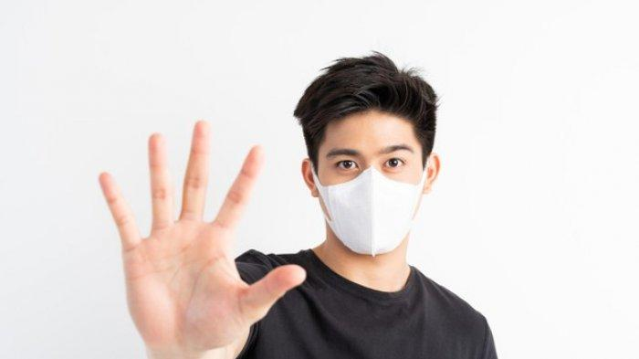

Mengenal Protokol 5M Untuk Mencegah COVID-19
Penulis : Doly ganggeng Prahoro
27 juli 2021
Meski sudah lebih dari satu tahun, pandemi virus corona masih terus menyerang penduduk dunia tanpa henti. Di Indonesia, angka kasus positif virus corona sudah di atas 1,5 juta jiwa (02/07/2021). Kabar baiknya sekitar lebih dari 1,3 juta orang berhasil pulih dariserangan virus SARS-CoV-2 penyebab COVID-19. Mengalahkan penyebaran dan penularan virus corona di dunia tidak mudah. Namun, beragam upaya terus dilakukan para ahli dan penduduk global demi mengakhiri ancaman virus yang terus menyerang bertubi-tubi. Di beberapa negara, termasuk Indonesia, pemerintah membuat pendoman dan protokol kesehatan untuk menghadapi virus corona.Di negara kita, protokol kesehatan ini dikenal dengan sebutan 5M. Sudah tahu apa saja protokol kesehatan 5M untuk membantu pencegahan penularan virus corona? Berikut ini protokol kesehatan 5M tersebut: